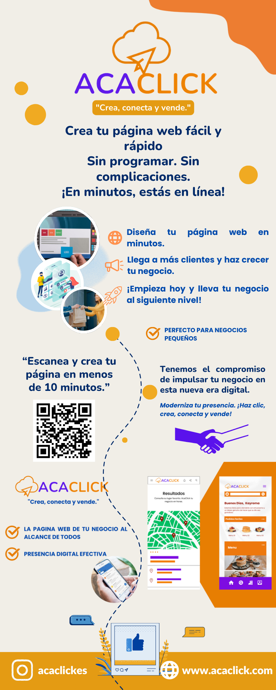

¿Quiénes Somos?
AcaClick es una empresa guerrerense especializada en el diseño y desarrollo de páginas web accesibles, enfocada en emprendedores y negocios locales que desean tener presencia profesional en línea. Ayudamos a conectar, mostrar y vender de forma simple y efectiva.
Misión
Brindar soluciones tecnológicas accesibles y efectivas para impulsar la digitalización de los negocios locales en Guerrero y más allá.
Visión
Ser la plataforma líder de creación de sitios web en el estado, ayudando a miles de emprendedores a crecer en el entorno digital.
Valores
- ✅ Compromiso
- 🚀 Innovación
- 🏆 Calidad
- 🌍 Accesibilidad
¿Por qué elegirnos?
Porque entendemos el valor de lo local, impulsamos a los emprendedores desde la raíz, y ofrecemos diseño moderno, velocidad y soporte técnico humano. ¡Tu éxito digital comienza aquí!
